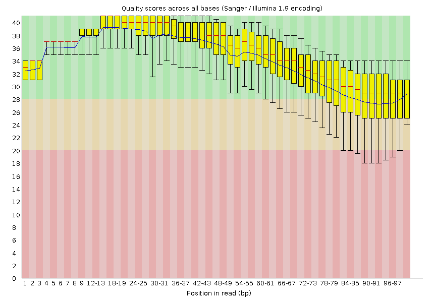

Data Quality¶
Key Learning Outcomes¶
After completing this practical the trainee should be able to:
-
Assess the overall quality of NGS (FastQ format) sequence reads
-
Visualise the quality, and other associated matrices, of reads to decide on filters and cutoffs for cleaning up data ready for downstream analysis
-
Clean up adaptors and pre-process the sequence data for further analysis
Resources¶
Tools¶
- FastQC:
http://www.bioinformatics.babraham.ac.uk/projects/fastqc/ - FASTX-Toolkit:
http://hannonlab.cshl.edu/fastx_toolkit/ - Skewer:
http://sourceforge.net/projects/skewer/
Links¶
Introduction¶
Going on a blind date with your read set? For a better understanding of the consequences please check the data quality!
For the purpose of this tutorial we are focusing only on Illumina sequencing which uses ’sequence by synthesis’ technology in a highly parallel fashion. Although Illumina high throughput sequencing provides highly accurate sequence data, several sequence artifacts, including base calling errors and small insertions/deletions, poor quality reads and primer/adapter contamination are quite common in the high throughput sequencing data. The primary errors are substitution errors. The error rates can vary from 0.5-2.0% with errors mainly rising in frequency at the 3’ ends of reads.
One way to investigate sequence data quality is to visualize the quality scores and other metrics in a compact manner to get an idea about the quality of a read data set. Read data sets can be improved by pre processing in different ways like trimming off low quality bases, cleaning up any sequencing adapters, removing PCR duplicates and screening for contamination. We can also look at other statistics such as, sequence length distribution, base composition, sequence complexity, presence of ambiguous bases etc. to assess the overall quality of the data set.
Highly redundant coverage (>15X) of the genome can be used to correct sequencing errors in the reads before assembly. Various k-mer based error correction methods exist but are beyond the scope of this tutorial.
Content¶
Tables¶
| Left align | Right align | Center align |
|---|---|---|
| This | This | This |
| column | column | column |
| will | will | will |
| be | be | be |
| left | right | center |
| aligned | aligned | aligned |
Code¶
Different people have different opinions on whether it is a good idea to provide the commands for trainees to copy-and-paste. In our experience, there is a huge amount of time wasted by novices typing commands incorrectly or changing filenames which affects commands you might run later on. We also think that it’s a good idea to pose regular questions or ask the trainees to modify a previous command. This way you can catch out those who are just trying to get ahead by blindly copying-and-pasting.
A nicely formatted, copy-and-pastable command is given below:
1 2 3 | cd ~/QC fastx_clipper -h fastx_clipper -v -Q 33 -l 20 -M 15 -a GATCGGAAGAGCGGTTCAGCAGGAATGCCGAG -i bad_example.fastq -o bad_example_clipped.fastq |
Maths¶
Inserting mathematical symbols can be done using mdx_math.
Here is an equation:
Here is some inline maths:
or
Figures¶

Figure XX - Per base sequence quality plot for qcdemo_R2.fastq.gz
Block-styled content¶
Question¶
Question
Here is a note or Question.
What is the answer?
Bonus exercise
Bonus exercise for fast learners.
Advanced exercise
Advanced exercise for super-fast learners
Important¶
Important
Some detail about important thing. Some more detail.
Hint¶
Hint
“Here is a hint”
Answer¶
Answer
Here is an answer.
Here is an answer.
Stop¶
STOP
You should not do this part.
See all types of coloured text here: (https://squidfunk.github.io/mkdocs-material/extensions/admonition/#types/)
Click and Reveal text¶
Content hidden until clicked¶
Question
Here’s some content.
Content shown until clicked closed¶
Question
Here’s some content.
Questions and Answers¶
Sequential Question and Answer.¶
Question
What is the answer?
Answer
Here is the answer
or is the following better?
Question
What is the answer?
Answer
Answer
Here is an answer
Sequential Question, Hint and Answer¶
Question
What is the answer?
Hint
Here is a hint
Answer
Here is an answer
or is the following better?
Question
What is the answer?
Hint
Hint
Here is a hint.
Answer
Answer
Here is an answer
The spoilers extension also has the functionality to nest (https://facelessuser.github.io/pymdown-extensions/extensions/spoilers/#examples) which may be something to look into in the future.
Formatting examples¶
This is in italics
This is bold
When you do want to insert a break tag using Markdown, you end a line with two or more spaces, then type return.